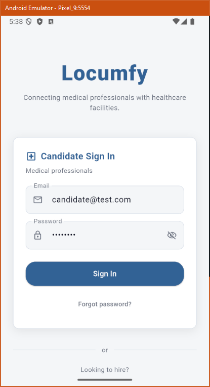
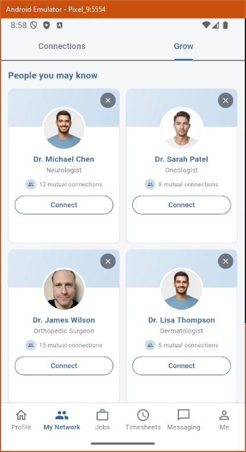
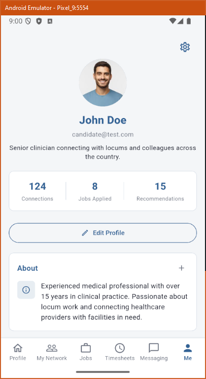

Mobile App
Nullref.Locumfy.Mobile — a Flutter/Dart companion app that mirrors the website’s candidate experience against the same REST contract.
Stack & structure
^3.11.5; android/ios/windows targets presenthttp ^1.2.0shared_preferences (dark-mode only), path_provider (downloads), file_picker (uploads)StatefulWidget + setState; theme via a ChangeNotifier singleton (ThemeController). No provider/bloc/riverpod.http://10.0.2.2:5236/api on Android emulator, localhost:5236 elsewhereUnder lib/: main.dart, theme.dart,
models/api_models.dart (~52 KB of DTOs with fromJson),
services/api_service.dart (~42 KB REST client), screens/,
widgets/ (incl. a 21 KB section_editor), utils/.
Navigation & API layer
Imperative Navigator: SplashScreen → LoginScreen →
MainScreen, a BottomNavigationBar over an IndexedStack of six tabs:
Profile (feed), My Network, Jobs,
Timesheets, Messaging, Me.
ApiService.instance is a singleton with _get/_post/_put/_delete helpers, a 5 s
timeout, and Bearer auth. It covers the full candidate and facility surface (jobs,
applications, profile section CRUD, AI summary, messaging, network, feed, timesheets, documents, lookups).
localStorage.)Screens







| Screen | Notes |
|---|---|
network_screen.dart | 3-tab TabController (Connections / Invitations / Grow); NPI + Credentialed badges |
timesheets_screen.dart (~71 KB) | The largest screen: weekly/monthly + 7-day editor |
profile_screen.dart (~51 KB) | “Me” editable profile with section editors |
messaging_screen.dart | Conversation list + thread chat |
documents_screen.dart | Document list / upload / download |
Parity with the website
Same endpoints, same camelCase JSON, same Bearer JWT. Both implement the 3-tab Network,
the NPI/Premium/Credentialed badges, create-account-via-NPI, AI summaries, profile & timesheet
PDF/HTML downloads, and a persisted light/dark theme (web ThemeContext ↔ mobile
ThemeController). Divergences: session persistence (web yes, mobile no) and navigation style
(declarative router vs imperative Navigator).
Locumfy platform technical documentation · generated from source analysis · see README for how to keep this current.